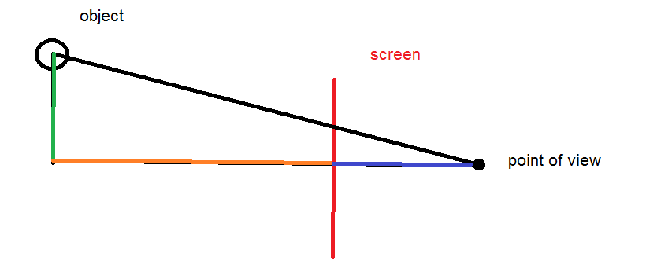

What is 3-D projection, and how does it work?
3-D objects must have three distinct dimensions, x, y and z. In a 3-D game, all visual objects must have a "true" position, that is, a position defined by the three dimensions. This is similar to how the position of dots on a Cartesian plane are defined by the two values x and y. Of course, our computer screens are flat, and thus only have 2 dimensions to project images; they are lacking the third dimension to project 3-D objects directly. 3-D projection is the process of converting a 3-D object such that it can be represented on a 2-D object. Our eyes, for example, use a similar concept to provide us with vision. To project 3-D, a specific mathematical process must be followed.
For projection to work, 3 values must be obtained. These values are; the position of the screen (where the object is projected onto), the Point Of View (where the screen is viewed from), and finally, the "true" position of the projected point. An actual 3-D explanation will not be provided, as a visual aid cannot be used. Instead, a very similar process will be used to show the projection of 2-D onto 1-D.
As can be seen, a straight line is drawn between the POV and the object. Assume that the green line is the y-distance (up-down distance) between the object and the centre of the screen, and the orange line is the x-distance (across distance) to the centre of the screen. Assume the blue line is the perpendicular distance between the point of view and the screen. The intersection point between the black line and the screen is the position of the projected point.
Two triangles in total are visible, with the smaller one being incased in the larger. It can be noticed that these two triangles have the exact same shape, ie they are similar. As a result, the ratios of their sides7:11 PM 11/8/2017 are the same; therefore,
Projected distance (from centre of screen) = (Dist. of green line) * (Dist. of blue line) / [(Dist. of blue line) + (Dist of orange line)]
This process for projecting 2-D onto 1-D is almost identical to that of 3-D projection, and it can be used to provide a basic understanding of how actual 3-D projection operates.